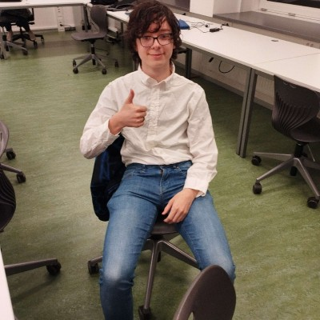

Hey i'm Valentijn, i'm 19 years old and i'm a student in a school with almost no greenery like most places these days. so i took it in my own hands to create a product that can help people with the same problem as me, and make it easier for them to have some greenery in their surroundings. My hope with this project is that it can help people with the same problem as me, and make it easier for them to have some greenery in their surroundings.
I'm Liam Otterspoor, I'm 21 years old and study Creative Media and Game Technologies at the Rotterdam University of Applied Sciences. My hobbies are coding, being a maker and scouting, and in my free time I like to hike in nature. As someone that really likes nature, I always missed the feeling that a little bit of nature gives you when inside an office or school, which is why this project spoke so much to me! My hope with this project is that outside people can feel themselves more at home with some extra green nearby, without creating more of a hassle for the companies to take care of these beautiful things!
I'm Marin, 19 years old. I took part in this project. I enjoy coming up with creative solutions to everyday problems such as the challenge of caring for plants. I often feel that schools could use more greenery, plants make for great decor and instantly add a nice atmosphere. Personally, I find it difficult to look after plants specifically, gauging when they need something so I can easily relate to others who struggle with this, too. I'm really glad we created this, as it could be a genuine help in places like schools, or even just for me personally, in keeping plants alive.
Hi, I'm Jarl and I'm 18 years old. I really enjoy creating software, programs and finding creative solutions to hard problems. One of the problems I found was that there isn't enough greenery in my surroundings. Sounds like an easy problem to fix, till you find out taking care of plants can be harder than it looks. Next to that I don't always have the time to take care of plants. Thats why we came up with the idea to automate the process of watering plants, just fill up the waterreservoir and let our product do the rest. It really helps people who have no clue how to care of plants (like me) still have some extra greenery. We worked quite hard to get to this point and hope you enjoy our product.